library(vegan)Cargando paquete requerido: permutelibrary(mvShapiroTest)
library(biotools)Cargando paquete requerido: MASS---
biotools version 4.3library(ggplot2)
library(MASS)En esta unidad, la dirección de la pregunta cambia respecto de clasificación.
En clasificación: variables medidas → grupo
En diferenciación: grupo → variables medidas
Por eso acá el grupo no es lo que queremos predecir. El grupo es la condición que usamos para preguntar si las variables respuesta cambian.
En la unidad anterior buscábamos formar grupos a partir de similitudes entre observaciones. En esta unidad ocurre algo distinto: los grupos ya están definidos y queremos evaluar si esos grupos se diferencian en otras variables.
Para evitar una comparación circular, conviene no usar las mismas variables para formar los grupos y para probar la diferencia. Por ejemplo, podemos agrupar personas según categorías de IMC, pero luego analizar si esos grupos difieren en valores de sangre.
La idea general de esta unidad es:
Tengo grupos definidos y quiero saber si esos grupos muestran diferencias.
MANOVA compara grupos usando varias variables respuesta al mismo tiempo. En vez de comparar una media por grupo, compara vectores de medias.
La hipótesis nula es:
Los vectores de medias son iguales entre grupos.
MANOVA queda como una rama histórica importante, pero en muchos análisis actuales fue desplazado por métodos basados en distancias y permutaciones, porque estos son más flexibles para trabajar con datos reales.
En un ANOVA común tenemos:
un grupo → una variable respuesta
Por ejemplo, comparamos si la altura cambia entre tratamientos.
En análisis multivariado el problema es más complejo, porque tenemos:
un grupo → varias variables respuesta
Por ejemplo, podemos tener muchas especies medidas en cada sitio.
Entonces aparece una pregunta importante:
¿Cómo hacemos para representar muchas variables respuesta de una forma más simple?
Una solución es calcular una matriz de distancias o disimilitudes. Esa matriz resume qué tan distintos son los sitios entre sí considerando todas las variables juntas.
Cada distancia corresponde a un par de sitios. Según los grupos a los que pertenecen esos dos sitios, esa distancia puede ser:
una distancia dentro del mismo grupo;
una distancia entre grupos distintos.
ANOSIM trabaja con esa idea. Compara las distancias dentro de los grupos con las distancias entre grupos.
La hipótesis nula es:
Las distancias dentro y entre grupos no son diferentes.
Es decir, los grupos no están más separados de lo que esperaríamos si no hubiera una estructura clara.
Si las distancias dentro de los grupos son menores que las distancias entre grupos, entonces los sitios del mismo grupo se parecen más entre sí que a los sitios de otros grupos.
Luego aparece otra idea importante: las permutaciones.
En vez de confiar en una distribución teórica, se mezclan las etiquetas de grupo muchas veces. Esto permite construir una referencia de azar.
La pregunta pasa a ser:
¿El resultado real es más fuerte que los resultados que aparecen cuando mezclamos los grupos al azar?
Con esta lógica, MRPP compara si los grupos reales son más compactos internamente que grupos armados al azar.
ANOSIM también usa permutaciones, pero MRPP ayuda a ver muy claro este razonamiento:
grupo real vs grupos mezclados al azar.
PERMANOVA combina dos ideas:
trabajar con distancias;
usar permutaciones.
Pero además agrega una lógica parecida al ANOVA.
PERMANOVA toma la diferencia total presente en la matriz de distancias y la separa en dos partes:
una parte asociada al factor que estamos probando;
una parte que queda sin explicar por ese factor.
Por eso aparece un R2. El R2 indica qué proporción de las diferencias entre sitios queda asociada al factor.
Tenemos 4 sitios y dos especies:
Sitio Grupo sp1 sp2
1 A 5 5
2 A 6 4
3 B 1 1
4 B 2 0Calculamos distancias entre sitios:
distancia 1-2 = 1 dentro del grupo A
distancia 3-4 = 1 dentro del grupo B
distancia 1-3 = 6 entre A y B
distancia 1-4 = 7 entre A y B
distancia 2-3 = 5 entre A y B
distancia 2-4 = 6 entre A y BTodas las distancias son:
1-2 = 1
1-3 = 6
1-4 = 7
2-3 = 5
2-4 = 6
3-4 = 1Distancias dentro de los grupos:
1-2 = 1
3-4 = 1Distancias entre grupos:
1-3 = 6
1-4 = 7
2-3 = 5
2-4 = 6Entonces:
Dentro = 1 + 1 = 2
Entre = 6 + 7 + 5 + 6 = 24
Total = 1 + 6 + 7 + 5 + 6 + 1 = 26En este ejemplo, gran parte de las diferencias aparecen cuando comparamos sitios de grupos distintos. Eso significa que el grupo ayuda mucho a entender las diferencias entre sitios.
Cálculo ilustrativo del R2:
R2 aproximado = diferencias entre grupos / total
R2 aproximado = 24 / 26 = 0.92Esto indicaría que el grupo explica mucho de la diferencia total.
Este cálculo es solo para entender la idea. PERMANOVA real no suma distancias simples de esta manera, sino que trabaja con sumas de cuadrados calculadas a partir de la matriz de distancias.
PERMDISP revisa la dispersión de los grupos.
Esto es necesario porque, cuando trabajamos con distancias, una diferencia entre grupos puede deberse a dos cosas distintas:
los grupos están en lugares diferentes;
un grupo está más desparramado que otro.
PERMDISP revisa justamente eso:
¿Los grupos tienen distinta dispersión interna?
La hipótesis nula es:
Los grupos tienen la misma dispersión.
Esto sirve como control, porque ANOSIM o PERMANOVA pueden mostrar diferencias entre grupos, pero parte de esa diferencia podría deberse a que un grupo está mucho más disperso que otro.
RRPP es un método para ajustar modelos multivariados usando permutaciones.
La diferencia principal con ANOSIM, MRPP y PERMANOVA es que RRPP no parte directamente de una matriz de distancias. En RRPP volvemos a trabajar con las variables respuesta dentro de un modelo.
Por ejemplo, si tenemos sitios con varias especies:
sitio grupo sp1 sp2
1 A 5 4
2 A 6 5
3 B 1 2
4 B 2 1La respuesta no es una sola variable, sino varias columnas juntas:
sp1 + sp2Entonces RRPP ajusta un modelo parecido a un modelo lineal, pero con varias respuestas al mismo tiempo:
sp1 + sp2 ~ grupoUna forma simple de pensarlo es:
dato observado = parte explicada por el modelo + residuoEl residuo es lo que el modelo no pudo explicar.
La idea importante es que RRPP no mezcla directamente las etiquetas de los grupos. Lo que mezcla son los residuos.
Pero hay un detalle clave: para probar si un factor importa, RRPP usa un modelo reducido y un modelo completo.
El modelo reducido es el modelo sin el factor que queremos probar.
El modelo completo es el modelo con el factor agregado.
Por ejemplo, si queremos probar si grupo ayuda a explicar la respuesta multivariada:
modelo reducido: sp1 + sp2 ~ 1
modelo completo: sp1 + sp2 ~ grupoEl modelo reducido solo usa una media general. No usa los grupos. Entonces representa la idea de que los grupos no importan.
RRPP toma los valores esperados por ese modelo reducido, mezcla sus residuos y vuelve a armar datos simulados:
datos simulados = valores esperados del modelo reducido + residuos mezcladosDespués ajusta el modelo completo sobre esos datos simulados y calcula el estadístico de prueba. Repite este proceso muchas veces para construir una referencia de azar.
Finalmente compara:
resultado real del modelo completo
vs
resultados obtenidos con residuos mezcladosSi el resultado real es mucho más fuerte que los resultados simulados, el p-valor será bajo. En ese caso interpretamos que el grupo sí ayuda a explicar la respuesta multivariada.
Supongamos una sola variable para simplificar la idea:
sitio grupo sp1
1 A 10
2 A 12
3 B 20
4 B 22Queremos probar si grupo explica los valores de sp1.
El modelo completo sería:
sp1 ~ grupoPero para construir el azar, RRPP parte del modelo reducido:
sp1 ~ 1Ese modelo reducido no usa los grupos. Solo calcula una media general:
media general = (10 + 12 + 20 + 22) / 4 = 16Entonces los valores esperados por el modelo reducido son:
sitio valor observado valor esperado
1 10 16
2 12 16
3 20 16
4 22 16Ahora calculamos los residuos:
residuo = observado - esperadositio residuo
1 -6
2 -4
3 4
4 6RRPP mezcla esos residuos. Por ejemplo:
residuos mezclados: 4, -6, 6, -4Luego vuelve a armar datos simulados:
dato simulado = valor esperado + residuo mezcladositio grupo esperado residuo mezclado dato simulado
1 A 16 4 20
2 A 16 -6 10
3 B 16 6 22
4 B 16 -4 12Con esta tabla simulada, RRPP vuelve a ajustar el modelo completo:
sp1_simulado ~ grupoY calcula cuánto parece explicar el grupo en esta tabla generada al azar.
Este proceso se repite muchas veces. Así se obtiene una distribución de resultados posibles si el grupo no tuviera un efecto real.
Luego se compara el resultado real contra esos resultados simulados.
Si el resultado real es mucho más fuerte que la mayoría de los resultados simulados, concluimos que el grupo ayuda a explicar la respuesta.
RRPP ajusta modelos multivariados y evalúa los factores mezclando residuos de modelos reducidos.
En palabras simples:
1. Ajusta un modelo sin el factor que quiero probar.
2. Calcula lo que ese modelo no explicó.
3. Mezcla esa parte no explicada.
4. Rearma datos simulados.
5. Ajusta el modelo completo.
6. Compara el resultado real contra los resultados simulados.La hipótesis nula general es:
El factor evaluado no ayuda a explicar las variables respuesta.Si el p-valor es bajo, interpretamos que el factor sí aporta información para explicar la respuesta multivariada.
ANOVA
│
├── MANOVA
│ └── compara vectores de medias
│ rama histórica, más rígida
│
| RRPP
|── ajusta modelos multivariados
| └── compara modelo reducido vs modelo completo
| └── construye el azar mezclando residuos
|
└── Métodos basados en distancias
│
├── ANOSIM
│ └── compara distancias dentro vs entre grupos
│
├── MRPP
│ └── compara grupos reales vs grupos mezclados al azar
│
├── PERMANOVA
│ └── separa las diferencias totales en parte asociada al factor y parte no explicada
│
└── PERMDISP
└── revisa si hay distinto desparramo interno
Mantel compara dos matrices de distancia.
Pregunta:
¿Dos formas de medir distancia entre las mismas observaciones están relacionadas?
La hipótesis nula es:
No hay relación entre las dos matrices de distancia.
Por ejemplo, podemos comparar:
distancia en composición de especies;
distancia ambiental entre sitios.
Si Mantel da significativo, podemos decir que los sitios más parecidos ambientalmente también tienden a ser más parecidos en composición, o al revés.
Mantel parcial hace algo parecido, pero controlando una tercera matriz de distancia.
Pregunta:
¿La relación entre dos matrices se mantiene después de controlar una tercera?
La hipótesis nula es:
No hay relación entre las dos matrices después de controlar la tercera.
Por ejemplo, podríamos preguntar si la relación entre composición de especies y ambiente se mantiene después de controlar la distancia geográfica.
library(vegan)Cargando paquete requerido: permutelibrary(mvShapiroTest)
library(biotools)Cargando paquete requerido: MASS---
biotools version 4.3library(ggplot2)
library(MASS)Antes de MANOVA conviene recordar ANOVA. ANOVA compara si la media de una sola variable respuesta cambia entre grupos.
La forma mental es:
grupo -> una respuestaPor ejemplo:
tratamiento -> alturadatos <- data.frame(
tratamiento = factor(c(
rep("control", 5),
rep("fertilizante_A", 5),
rep("fertilizante_B", 5)
)),
altura = c(
10, 11, 9, 10, 12,
14, 15, 13, 14, 16,
19, 20, 18, 21, 19
)
)
datos tratamiento altura
1 control 10
2 control 11
3 control 9
4 control 10
5 control 12
6 fertilizante_A 14
7 fertilizante_A 15
8 fertilizante_A 13
9 fertilizante_A 14
10 fertilizante_A 16
11 fertilizante_B 19
12 fertilizante_B 20
13 fertilizante_B 18
14 fertilizante_B 21
15 fertilizante_B 19tapply(datos$altura, datos$tratamiento, mean) control fertilizante_A fertilizante_B
10.4 14.4 19.4 tapply(datos$altura, datos$tratamiento, sd) control fertilizante_A fertilizante_B
1.140175 1.140175 1.140175 boxplot(altura ~ tratamiento,
data = datos,
xlab = "Tratamiento",
ylab = "Altura",
main = "Altura según tratamiento")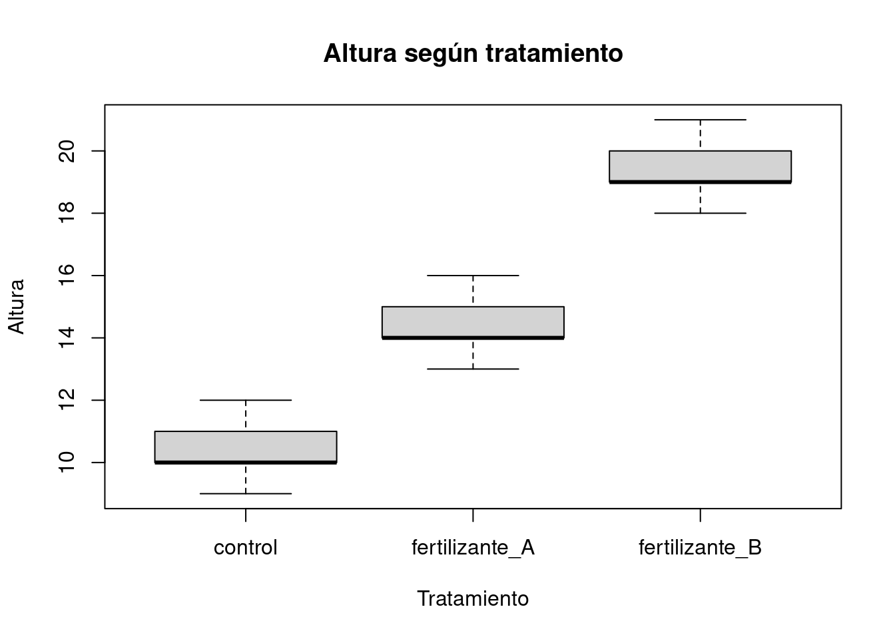
Hipótesis:
H0: las medias de altura son iguales entre tratamientos.
H1: al menos una media es diferente.Regla práctica:
p < 0.05 -> rechazo H0.
p > 0.05 -> no rechazo H0.modelo_anova <- aov(altura ~ tratamiento, data = datos)
summary(modelo_anova) Df Sum Sq Mean Sq F value Pr(>F)
tratamiento 2 203.3 101.7 78.2 1.31e-07 ***
Residuals 12 15.6 1.3
---
Signif. codes: 0 '***' 0.001 '**' 0.01 '*' 0.05 '.' 0.1 ' ' 1Interpretación:
El p-valor es muy bajo. Por lo tanto, se rechaza la hipótesis nula de igualdad de medias. Hay evidencia de que la altura promedio cambia entre tratamientos.
MANOVA es una extensión de ANOVA. La diferencia es que ahora no tenemos una respuesta, sino varias respuestas juntas.
La forma mental pasa a ser:
grupo -> varias respuestasEn este ejemplo con iris:
Species -> Sepal.Length + Sepal.Width + Petal.Length + Petal.WidthMANOVA compara vectores de medias. Un vector de medias es un conjunto de medias de varias variables.
Hipótesis global:
H0: los vectores de medias son iguales entre grupos.
H1: al menos un grupo tiene un vector de medias diferente.MANOVA clásico tiene supuestos fuertes y fáciles de romper. Por eso sirve mucho para entender la lógica, pero en la práctica moderna suelen usarse métodos con distancias y permutaciones. Veamos el ejemplo:
data(iris)
head(iris) Sepal.Length Sepal.Width Petal.Length Petal.Width Species
1 5.1 3.5 1.4 0.2 setosa
2 4.9 3.0 1.4 0.2 setosa
3 4.7 3.2 1.3 0.2 setosa
4 4.6 3.1 1.5 0.2 setosa
5 5.0 3.6 1.4 0.2 setosa
6 5.4 3.9 1.7 0.4 setosaY <- as.matrix(iris[, 1:4])
grupos <- iris$Species
table(grupos)grupos
setosa versicolor virginica
50 50 50 aggregate(iris[, 1:4],
by = list(especie = iris$Species),
mean) especie Sepal.Length Sepal.Width Petal.Length Petal.Width
1 setosa 5.006 3.428 1.462 0.246
2 versicolor 5.936 2.770 4.260 1.326
3 virginica 6.588 2.974 5.552 2.026pairs(iris[, 1:4],
col = as.integer(iris$Species),
pch = 19,
main = "Iris: variables morfológicas por especie")
legend("topright",
legend = levels(iris$Species),
col = 1:3,
pch = 19,
bty = "n")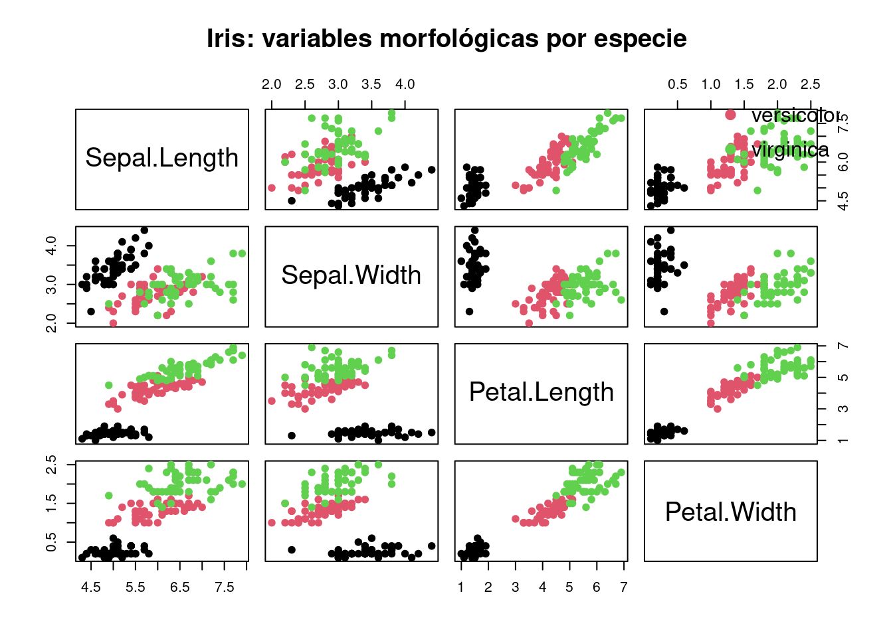
Hipótesis del test:
H0: los datos del grupo siguen una normal multivariada.
H1: los datos del grupo no siguen una normal multivariada.Regla:
p < 0.05 -> rechazo H0 -> hay evidencia de falta de normalidad multivariada.
p > 0.05 -> no rechazo H0 -> no hay evidencia suficiente contra normalidad.mvShapiro.Test(as.matrix(Y[grupos == "setosa", ]))
Generalized Shapiro-Wilk test for Multivariate Normality by
Villasenor-Alva and Gonzalez-Estrada
data: as.matrix(Y[grupos == "setosa", ])
MVW = 0.96003, p-value = 0.01203mvShapiro.Test(as.matrix(Y[grupos == "versicolor", ]))
Generalized Shapiro-Wilk test for Multivariate Normality by
Villasenor-Alva and Gonzalez-Estrada
data: as.matrix(Y[grupos == "versicolor", ])
MVW = 0.97415, p-value = 0.3183mvShapiro.Test(as.matrix(Y[grupos == "virginica", ]))
Generalized Shapiro-Wilk test for Multivariate Normality by
Villasenor-Alva and Gonzalez-Estrada
data: as.matrix(Y[grupos == "virginica", ])
MVW = 0.98521, p-value = 0.9652Setosa rechazó normalidad multivariada, mientras que versicolor y virginica no la rechazaron.
Si los datos siguen una normal multivariada, las distancias de Mahalanobis deberían parecerse a cuantiles de una chi-cuadrado.
qq_mahalanobis <- function(X, titulo = "") {
centro <- colMeans(X)
S <- cov(X)
d2 <- mahalanobis(X, center = centro, cov = S)
q_teoricos <- qchisq(ppoints(nrow(X)), df = ncol(X))
plot(q_teoricos,
sort(d2),
pch = 19,
xlab = "Cuantiles teóricos chi-cuadrado",
ylab = "Distancias de Mahalanobis ordenadas",
main = titulo)
abline(0, 1, lty = 2)
}
par(mfrow = c(1, 3))
qq_mahalanobis(Y[grupos == "setosa", ], "Setosa")
qq_mahalanobis(Y[grupos == "versicolor", ], "Versicolor")
qq_mahalanobis(Y[grupos == "virginica", ], "Virginica")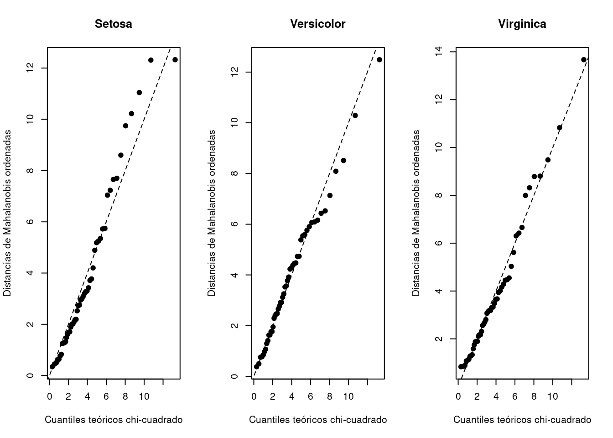
par(mfrow = c(1, 1))Hipótesis de Box M:
H0: las matrices de covarianza son iguales entre grupos.
H1: al menos una matriz de covarianza difiere.Regla:
p < 0.05 -> rechazo H0 -> no hay homogeneidad de covarianzas.
p > 0.05 -> no rechazo H0.boxM(Y, grupos)
Box's M-test for Homogeneity of Covariance Matrices
data: Y
Chi-Sq (approx.) = 140.94, df = 20, p-value < 2.2e-16Las matrices de covarianza no son homogéneas entre especies.
IMOPORTANTE: si las matrices de covarianza son muy distintas, MANOVA puede mezclar diferencias de medias con diferencias de dispersión. Eso puede inflar el error tipo I.
Este supuesto no se resuelve con una función de R. Depende del diseño.
Pregunta práctica:
¿Cada observación es independiente de las demás?Si hubiera medidas repetidas, bloques, parcelas o individuos relacionados, el modelo debería respetar esa estructura.
modelo_manova <- manova(Y ~ grupos)
summary(modelo_manova, test = "Wilks") Df Wilks approx F num Df den Df Pr(>F)
grupos 2 0.023439 199.15 8 288 < 2.2e-16 ***
Residuals 147
---
Signif. codes: 0 '***' 0.001 '**' 0.01 '*' 0.05 '.' 0.1 ' ' 1summary(modelo_manova, test = "Pillai") Df Pillai approx F num Df den Df Pr(>F)
grupos 2 1.1919 53.466 8 290 < 2.2e-16 ***
Residuals 147
---
Signif. codes: 0 '***' 0.001 '**' 0.01 '*' 0.05 '.' 0.1 ' ' 1summary(modelo_manova, test = "Hotelling") Df Hotelling-Lawley approx F num Df den Df Pr(>F)
grupos 2 32.477 580.53 8 286 < 2.2e-16 ***
Residuals 147
---
Signif. codes: 0 '***' 0.001 '**' 0.01 '*' 0.05 '.' 0.1 ' ' 1summary(modelo_manova, test = "Roy") Df Roy approx F num Df den Df Pr(>F)
grupos 2 32.192 1167 4 145 < 2.2e-16 ***
Residuals 147
---
Signif. codes: 0 '***' 0.001 '**' 0.01 '*' 0.05 '.' 0.1 ' ' 1Hipótesis en todos los estadísticos:
H0: los vectores de medias son iguales entre especies.
H1: los vectores de medias no son iguales entre especies.Regla:
p < 0.05 -> rechazo H0 -> hay diferencia multivariada.
p > 0.05 -> no rechazo H0.Wilks, Pillai, Hotelling-Lawley y Roy son formas distintas de resumir la separación multivariada. R los transforma a una F aproximada para calcular el p-valor.
En la práctica para este curso:
En iris, todos los estadísticos dan p-valores extremadamente bajos. La evidencia de diferencia multivariada entre especies es muy fuerte, aunque el MANOVA clásico debe interpretarse con cautela por la violación de supuestos.
Después del MANOVA global, podemos mirar qué variables aportan más a la diferencia.
summary.aov(modelo_manova) Response Sepal.Length :
Df Sum Sq Mean Sq F value Pr(>F)
grupos 2 63.212 31.606 119.26 < 2.2e-16 ***
Residuals 147 38.956 0.265
---
Signif. codes: 0 '***' 0.001 '**' 0.01 '*' 0.05 '.' 0.1 ' ' 1
Response Sepal.Width :
Df Sum Sq Mean Sq F value Pr(>F)
grupos 2 11.345 5.6725 49.16 < 2.2e-16 ***
Residuals 147 16.962 0.1154
---
Signif. codes: 0 '***' 0.001 '**' 0.01 '*' 0.05 '.' 0.1 ' ' 1
Response Petal.Length :
Df Sum Sq Mean Sq F value Pr(>F)
grupos 2 437.10 218.551 1180.2 < 2.2e-16 ***
Residuals 147 27.22 0.185
---
Signif. codes: 0 '***' 0.001 '**' 0.01 '*' 0.05 '.' 0.1 ' ' 1
Response Petal.Width :
Df Sum Sq Mean Sq F value Pr(>F)
grupos 2 80.413 40.207 960.01 < 2.2e-16 ***
Residuals 147 6.157 0.042
---
Signif. codes: 0 '***' 0.001 '**' 0.01 '*' 0.05 '.' 0.1 ' ' 1Hipótesis para cada ANOVA:
H0: la media de esa variable es igual entre especies.
H1: al menos una especie tiene media diferente en esa variable.Esto ya no es MANOVA global. Son ANOVAs separados. Sirven para explorar, pero si se reportan formalmente hay que considerar comparaciones múltiples.
En iris, las variables del pétalo suelen mostrar los F más altos. Eso indica que Petal.Length y Petal.Width separan mucho más a las especies que las variables del sépalo.
ANOSIM cambia la lógica. Ya no compara vectores de medias. Ahora compara distancias.
Pregunta general:
¿Las observaciones del mismo grupo son más parecidas entre sí que las observaciones de grupos diferentes?Hipótesis:
H0: no hay diferencia entre grupos; las distancias dentro y entre grupos no muestran separación.
H1: hay diferencia entre grupos; las distancias dentro de grupos tienden a ser menores que entre grupos.Lectura del estadístico R:
R cerca de 0 -> no hay separación clara.
R positivo y alto -> mayor separación.
R cerca de 1 -> separación fuerte.
R negativo -> los grupos no están separados, o están más mezclados de lo esperable.Regla con p-valor:
p < 0.05 -> rechazo H0.
p > 0.05 -> no rechazo H0.En pruebas de permutación, bajo H0 las etiquetas son intercambiables. Se mezclan muchas veces, se recalcula el estadístico y se compara el valor real contra esa distribución de valores permutados.
set.seed(123)
X_sep <- rbind(
mvrnorm(30, mu = c(0, 0), Sigma = diag(0.5, 2)),
mvrnorm(30, mu = c(5, 5), Sigma = diag(0.5, 2)),
mvrnorm(30, mu = c(0, 5), Sigma = diag(0.5, 2))
)
grupos_sim <- factor(rep(c("G1", "G2", "G3"), each = 30))
plot(X_sep,
col = as.integer(grupos_sim),
pch = 19,
main = "Grupos simulados separados",
xlab = "Variable 1",
ylab = "Variable 2")
legend("bottomright",
legend = levels(grupos_sim),
col = 1:3,
pch = 19,
bty = "n")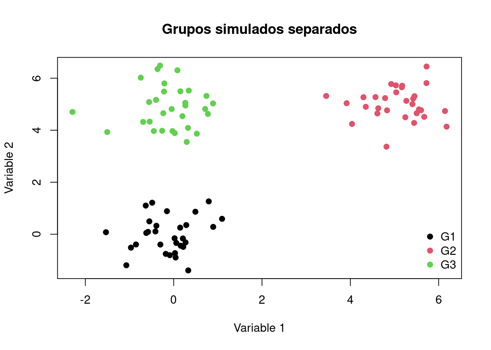
dist_sep <- dist(X_sep, method = "euclidean")
anosim_sep <- anosim(dist_sep, grupos_sim, permutations = 999)
plot(anosim_sep, main = "ANOSIM: grupos separados")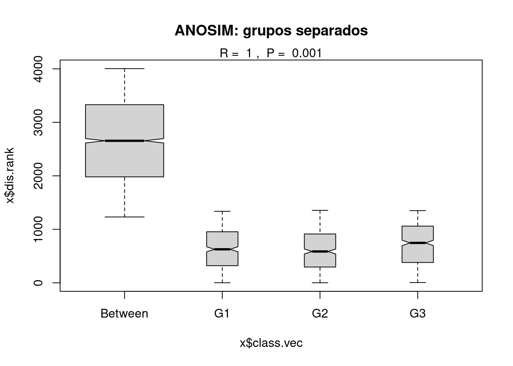
Interpretación esperada:
summary(anosim_sep)
Call:
anosim(x = dist_sep, grouping = grupos_sim, permutations = 999)
Dissimilarity: euclidean
ANOSIM statistic R: 0.9997
Significance: 0.001
Permutation: free
Number of permutations: 999
Upper quantiles of permutations (null model):
90% 95% 97.5% 99%
0.0258 0.0396 0.0544 0.0696
Dissimilarity ranks between and within classes:
0% 25% 50% 75% 100% N
Between 1231 1980.75 2655.5 3330.25 4005 2700
G1 2 320.50 627.0 954.50 1337 435
G2 1 295.50 586.0 913.00 1355 435
G3 5 380.50 746.0 1060.50 1350 435R muy alto y p bajo -> separación fuerte y significativa.set.seed(123)
X_sol <- rbind(
mvrnorm(30, mu = c(0, 0), Sigma = diag(2.0, 2)),
mvrnorm(30, mu = c(1, 1), Sigma = diag(2.0, 2)),
mvrnorm(30, mu = c(0, 1), Sigma = diag(2.0, 2))
)
dist_sol <- dist(X_sol, method = "euclidean")
anosim_sol <- anosim(dist_sol, grupos_sim, permutations = 999)
summary(anosim_sol)
Call:
anosim(x = dist_sol, grouping = grupos_sim, permutations = 999)
Dissimilarity: euclidean
ANOSIM statistic R: 0.114
Significance: 0.001
Permutation: free
Number of permutations: 999
Upper quantiles of permutations (null model):
90% 95% 97.5% 99%
0.0189 0.0282 0.0358 0.0478
Dissimilarity ranks between and within classes:
0% 25% 50% 75% 100% N
Between 1 1076.5 2129.5 3079.25 4005 2700
G1 5 841.0 1703.0 2734.50 3964 435
G2 4 780.5 1575.0 2611.50 3980 435
G3 10 1020.5 2007.0 3101.00 3976 435plot(X_sol,
col = as.integer(grupos_sim),
pch = 19,
main = "Grupos solapados",
xlab = "Variable 1",
ylab = "Variable 2")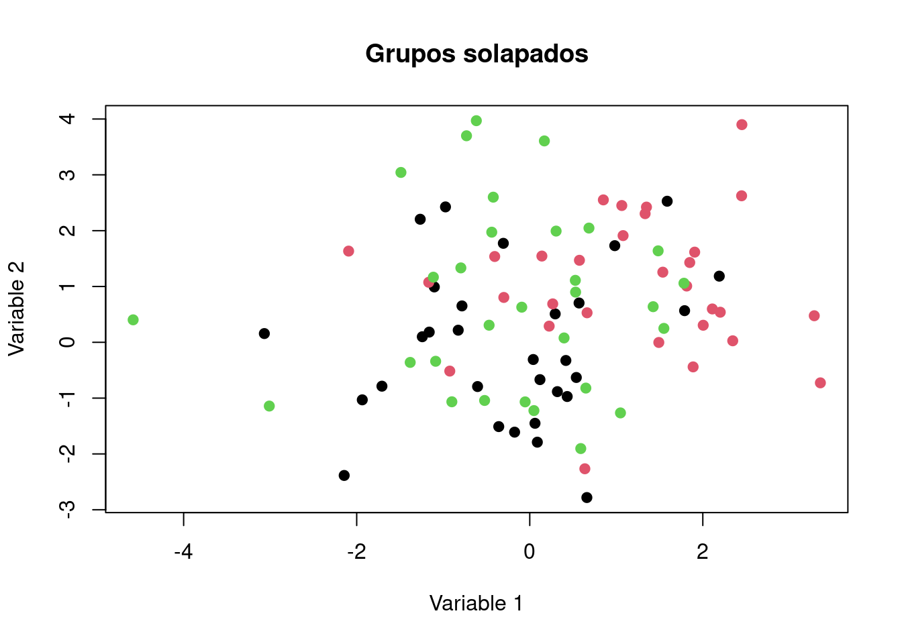
plot(anosim_sol, main = "ANOSIM: grupos solapados")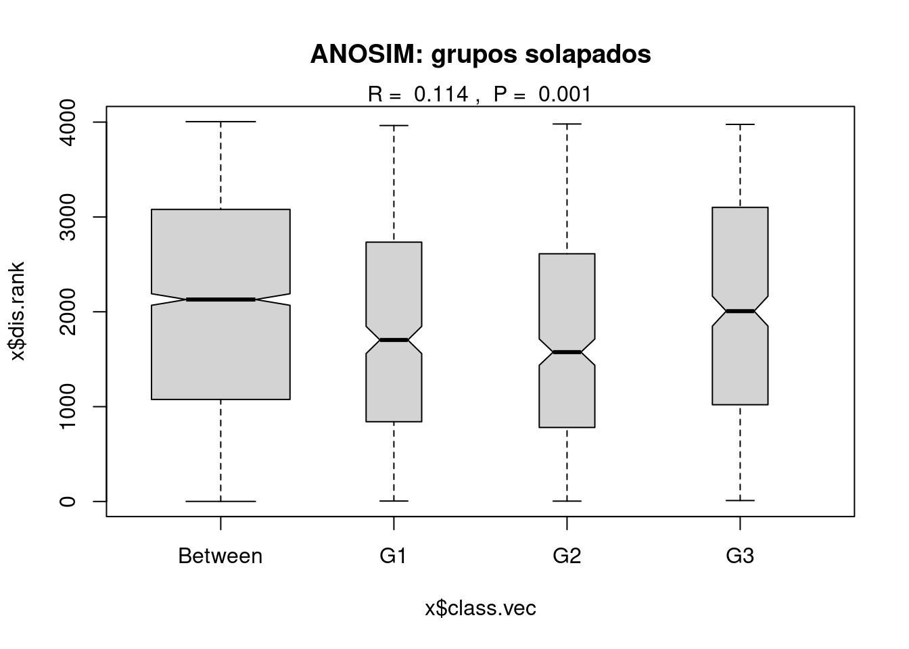
El aprendizaje clave es que el p-valor puede ser bajo aunque R sea bajo. En ese caso hay diferencia detectable, pero la separación es débil.
Usamos dos matrices del paquete vegan:
varespec -> sitios x especies
varechem -> sitios x variables ambientalesLa pregunta será:
¿Los sitios de pH bajo y pH alto difieren en composición vegetal?data(varespec)
data(varechem)
head(varespec) Callvulg Empenigr Rhodtome Vaccmyrt Vaccviti Pinusylv Descflex Betupube
18 0.55 11.13 0.00 0.00 17.80 0.07 0.00 0
15 0.67 0.17 0.00 0.35 12.13 0.12 0.00 0
24 0.10 1.55 0.00 0.00 13.47 0.25 0.00 0
27 0.00 15.13 2.42 5.92 15.97 0.00 3.70 0
23 0.00 12.68 0.00 0.00 23.73 0.03 0.00 0
19 0.00 8.92 0.00 2.42 10.28 0.12 0.02 0
Vacculig Diphcomp Dicrsp Dicrfusc Dicrpoly Hylosple Pleuschr Polypili
18 1.60 2.07 0.00 1.62 0.00 0.0 4.67 0.02
15 0.00 0.00 0.33 10.92 0.02 0.0 37.75 0.02
24 0.00 0.00 23.43 0.00 1.68 0.0 32.92 0.00
27 1.12 0.00 0.00 3.63 0.00 6.7 58.07 0.00
23 0.00 0.00 0.00 3.42 0.02 0.0 19.42 0.02
19 0.00 0.00 0.00 0.32 0.02 0.0 21.03 0.02
Polyjuni Polycomm Pohlnuta Ptilcili Barbhatc Cladarbu Cladrang Cladstel
18 0.13 0.00 0.13 0.12 0.00 21.73 21.47 3.50
15 0.23 0.00 0.03 0.02 0.00 12.05 8.13 0.18
24 0.23 0.00 0.32 0.03 0.00 3.58 5.52 0.07
27 0.00 0.13 0.02 0.08 0.08 1.42 7.63 2.55
23 2.12 0.00 0.17 1.80 0.02 9.08 9.22 0.05
19 1.58 0.18 0.07 0.27 0.02 7.23 4.95 22.08
Cladunci Cladcocc Cladcorn Cladgrac Cladfimb Cladcris Cladchlo Cladbotr
18 0.30 0.18 0.23 0.25 0.25 0.23 0.00 0.00
15 2.65 0.13 0.18 0.23 0.25 1.23 0.00 0.00
24 8.93 0.00 0.20 0.48 0.00 0.07 0.10 0.02
27 0.15 0.00 0.38 0.12 0.10 0.03 0.00 0.02
23 0.73 0.08 1.42 0.50 0.17 1.78 0.05 0.05
19 0.25 0.10 0.25 0.18 0.10 0.12 0.05 0.02
Cladamau Cladsp Cetreric Cetrisla Flavniva Nepharct Stersp Peltapht Icmaeric
18 0.08 0.02 0.02 0.00 0.12 0.02 0.62 0.02 0
15 0.00 0.00 0.15 0.03 0.00 0.00 0.85 0.00 0
24 0.00 0.00 0.78 0.12 0.00 0.00 0.03 0.00 0
27 0.00 0.02 0.00 0.00 0.00 0.00 0.00 0.07 0
23 0.00 0.00 0.00 0.00 0.02 0.00 1.58 0.33 0
19 0.00 0.00 0.00 0.00 0.02 0.00 0.28 0.00 0
Cladcerv Claddefo Cladphyl
18 0 0.25 0
15 0 1.00 0
24 0 0.33 0
27 0 0.15 0
23 0 1.97 0
19 0 0.37 0head(varechem) N P K Ca Mg S Al Fe Mn Zn Mo Baresoil Humdepth
18 19.8 42.1 139.9 519.4 90.0 32.3 39.0 40.9 58.1 4.5 0.3 43.9 2.2
15 13.4 39.1 167.3 356.7 70.7 35.2 88.1 39.0 52.4 5.4 0.3 23.6 2.2
24 20.2 67.7 207.1 973.3 209.1 58.1 138.0 35.4 32.1 16.8 0.8 21.2 2.0
27 20.6 60.8 233.7 834.0 127.2 40.7 15.4 4.4 132.0 10.7 0.2 18.7 2.9
23 23.8 54.5 180.6 777.0 125.8 39.5 24.2 3.0 50.1 6.6 0.3 46.0 3.0
19 22.8 40.9 171.4 691.8 151.4 40.8 104.8 17.6 43.6 9.1 0.4 40.5 3.8
pH
18 2.7
15 2.8
24 3.0
27 2.8
23 2.7
19 2.7Antes de elegir una distancia, conviene mirar la estructura de la matriz de especies.
dim(varespec)[1] 24 44mean(varespec == 0)[1] 0.4185606summary(rowMeans(varespec == 0)) Min. 1st Qu. Median Mean 3rd Qu. Max.
0.2955 0.3864 0.4091 0.4186 0.4545 0.5909 summary(colMeans(varespec == 0)) Min. 1st Qu. Median Mean 3rd Qu. Max.
0.00000 0.07292 0.45833 0.41856 0.75000 0.87500 summary(rowSums(varespec)) Min. 1st Qu. Median Mean 3rd Qu. Max.
64.11 89.67 100.53 100.74 111.39 125.61 summary(colSums(varespec)) Min. 1st Qu. Median Mean 3rd Qu. Max.
0.100 1.812 5.830 54.948 23.655 486.710 hist(as.matrix(varespec),
main = "Distribución de abundancias/coberturas",
xlab = "Valor")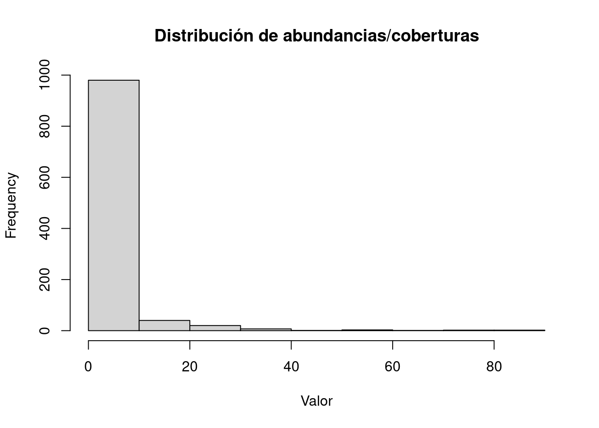
varechem$grupo_pH <- ifelse(varechem$pH < median(varechem$pH),
"pH_bajo",
"pH_alto")
varechem$grupo_pH <- factor(varechem$grupo_pH)
table(varechem$grupo_pH)
pH_alto pH_bajo
14 10 Para abundancia/cobertura de especies, Bray-Curtis suele ser una distancia adecuada.
dist_BC <- vegdist(varespec, method = "bray")
anosim_BC <- anosim(dist_BC,
varechem$grupo_pH,
permutations = 999)
summary(anosim_BC)
Call:
anosim(x = dist_BC, grouping = varechem$grupo_pH, permutations = 999)
Dissimilarity: bray
ANOSIM statistic R: 0.1936
Significance: 0.013
Permutation: free
Number of permutations: 999
Upper quantiles of permutations (null model):
90% 95% 97.5% 99%
0.0904 0.1258 0.1628 0.1952
Dissimilarity ranks between and within classes:
0% 25% 50% 75% 100% N
Between 11 83.5 157 214.75 276 140
pH_alto 1 54.5 136 212.50 271 91
pH_bajo 10 53.0 97 137.00 263 45plot(anosim_BC, main = "ANOSIM Bray-Curtis: pH bajo vs alto")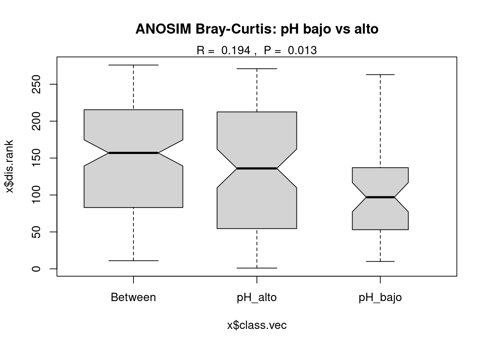
Hipótesis:
H0: no hay diferencia en composición vegetal entre pH bajo y pH alto.
H1: hay diferencia en composición vegetal entre pH bajo y pH alto.En la corrida revisada, Bray-Curtis detectó una diferencia significativa pero débil a moderada.
Esta parte agrega una capa crítica: cambiar la distancia cambia la pregunta.
# 1. Bray-Curtis: abundancia/cobertura
# ya calculada como dist_BC
# 2. Jaccard: presencia-ausencia
varespec_pa <- decostand(varespec, method = "pa")
dist_jac <- vegdist(varespec_pa, method = "jaccard")
# 3. Hellinger + Euclidiana
varespec_hel <- decostand(varespec, method = "hellinger")
dist_hel <- dist(varespec_hel, method = "euclidean")
anosim_jac <- anosim(dist_jac,
varechem$grupo_pH,
permutations = 999)
anosim_hel <- anosim(dist_hel,
varechem$grupo_pH,
permutations = 999)
summary(anosim_BC)
Call:
anosim(x = dist_BC, grouping = varechem$grupo_pH, permutations = 999)
Dissimilarity: bray
ANOSIM statistic R: 0.1936
Significance: 0.013
Permutation: free
Number of permutations: 999
Upper quantiles of permutations (null model):
90% 95% 97.5% 99%
0.0904 0.1258 0.1628 0.1952
Dissimilarity ranks between and within classes:
0% 25% 50% 75% 100% N
Between 11 83.5 157 214.75 276 140
pH_alto 1 54.5 136 212.50 271 91
pH_bajo 10 53.0 97 137.00 263 45summary(anosim_jac)
Call:
anosim(x = dist_jac, grouping = varechem$grupo_pH, permutations = 999)
Dissimilarity: jaccard
ANOSIM statistic R: -0.02868
Significance: 0.66
Permutation: free
Number of permutations: 999
Upper quantiles of permutations (null model):
90% 95% 97.5% 99%
0.0839 0.1162 0.1387 0.1797
Dissimilarity ranks between and within classes:
0% 25% 50% 75% 100% N
Between 3 67.0 137 199.5 276 140
pH_alto 7 92.5 161 219.5 271 91
pH_bajo 1 56.5 101 173.5 267 45summary(anosim_hel)
Call:
anosim(x = dist_hel, grouping = varechem$grupo_pH, permutations = 999)
Dissimilarity: euclidean
ANOSIM statistic R: 0.2485
Significance: 0.005
Permutation: free
Number of permutations: 999
Upper quantiles of permutations (null model):
90% 95% 97.5% 99%
0.0852 0.1309 0.1715 0.2031
Dissimilarity ranks between and within classes:
0% 25% 50% 75% 100% N
Between 9 94.75 162 217.5 276 140
pH_alto 1 47.50 140 212.0 269 91
pH_bajo 7 53.00 82 123.0 257 45tabla_anosim <- data.frame(
distancia = c("Bray-Curtis", "Jaccard", "Hellinger + Euclidiana"),
pregunta = c("abundancia/cobertura", "presencia-ausencia", "composición transformada"),
R = c(anosim_BC$statistic,
anosim_jac$statistic,
anosim_hel$statistic),
p_valor = c(anosim_BC$signif,
anosim_jac$signif,
anosim_hel$signif)
)
tabla_anosim distancia pregunta R p_valor
1 Bray-Curtis abundancia/cobertura 0.19359244 0.013
2 Jaccard presencia-ausencia -0.02867647 0.660
3 Hellinger + Euclidiana composición transformada 0.24852941 0.005Interpretación integrada:
Si Bray-Curtis y Hellinger dan significativo, pero Jaccard no, la diferencia no está tanto en qué especies aparecen, sino en cuánto pesan o abundan esas especies.Ahora usamos strata. Esto restringe las permutaciones dentro de bloques.
Hipótesis del ANOSIM restringido:
H0: dentro de bloques de Al, no hay diferencia de composición entre pH bajo y pH alto.
H1: dentro de bloques de Al, sí hay diferencia de composición entre pH bajo y pH alto.El profe remarcó que esta idea viene de diseños con bloques: si hay una estructura que no conviene romper, las permutaciones deben respetarla. En este ejemplo, el bloqueo por Al es ficticio y se usa para mostrar el procedimiento.
varechem$bloque_Al <- cut(
varechem$Al,
breaks = quantile(varechem$Al,
probs = c(0, 1/3, 2/3, 1)),
include.lowest = TRUE,
labels = c("Al_bajo", "Al_medio", "Al_alto")
)
table(varechem$bloque_Al)
Al_bajo Al_medio Al_alto
8 8 8 table(varechem$bloque_Al, varechem$grupo_pH)
pH_alto pH_bajo
Al_bajo 3 5
Al_medio 4 4
Al_alto 7 1anosim_restringido <- anosim(
dist_BC,
varechem$grupo_pH,
strata = varechem$bloque_Al,
permutations = 999
)
summary(anosim_restringido)
Call:
anosim(x = dist_BC, grouping = varechem$grupo_pH, permutations = 999, strata = varechem$bloque_Al)
Dissimilarity: bray
ANOSIM statistic R: 0.1936
Significance: 0.086
Blocks: strata
Permutation: free
Number of permutations: 999
Upper quantiles of permutations (null model):
90% 95% 97.5% 99%
0.180 0.241 0.296 0.345
Dissimilarity ranks between and within classes:
0% 25% 50% 75% 100% N
Between 11 83.5 157 214.75 276 140
pH_alto 1 54.5 136 212.50 271 91
pH_bajo 10 53.0 97 137.00 263 45Si el ANOSIM libre es significativo pero el restringido deja de serlo, la evidencia por pH no es tan robusta al respetar la estructura asociada a Al.
Frase clave:
strata no cambia el R observado; cambia la distribución nula contra la que se compara ese R.PERMDISP revisa un supuesto importante de ANOSIM: que los grupos no tengan dispersiones multivariadas muy diferentes.
Hipótesis:
H0: los grupos tienen dispersión multivariada similar.
H1: los grupos tienen dispersión multivariada diferente.Regla:
p < 0.05 -> rechazo H0 -> cuidado, hay diferencias de dispersión.
p > 0.05 -> no rechazo H0 -> no hay evidencia de dispersiones distintas.permdisp <- betadisper(dist_BC, varechem$grupo_pH)
permutest(permdisp, permutations = 999)
Permutation test for homogeneity of multivariate dispersions
Permutation: free
Number of permutations: 999
Response: Distances
Df Sum Sq Mean Sq F N.Perm Pr(>F)
Groups 1 0.01184 0.011837 0.7847 999 0.384
Residuals 22 0.33185 0.015084 plot(permdisp, main = "PERMDISP: dispersión según grupo de pH")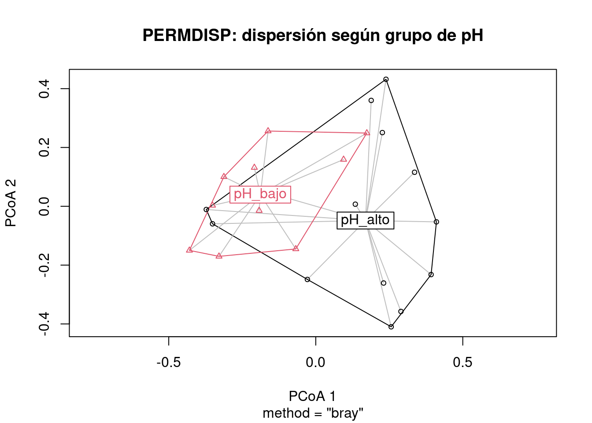
En la corrida revisada, PERMDISP no fue significativo. Entonces la diferencia de ANOSIM con Bray-Curtis no parece deberse solo a que un grupo sea más disperso que el otro.
Mantel compara dos matrices de distancia calculadas sobre las mismas unidades.
Pregunta general:
¿Dos formas de medir diferencias entre los mismos sitios están relacionadas?En este ejemplo:
¿Los sitios ambientalmente más diferentes también son más diferentes en composición vegetal?Hipótesis:
H0: no hay correlación entre la matriz de distancia biológica y la matriz de distancia ambiental.
H1: sí hay correlación entre ambas matrices.dist_bio <- vegdist(varespec, method = "bray")
varechem_num <- varechem[, sapply(varechem, is.numeric)]
varechem_std <- scale(varechem_num)
dist_amb <- dist(varechem_std, method = "euclidean")mantel_resultado <- mantel(dist_bio,
dist_amb,
method = "pearson",
permutations = 999)
mantel_resultado
Mantel statistic based on Pearson's product-moment correlation
Call:
mantel(xdis = dist_bio, ydis = dist_amb, method = "pearson", permutations = 999)
Mantel statistic r: 0.3047
Significance: 0.001
Upper quantiles of permutations (null model):
90% 95% 97.5% 99%
0.107 0.145 0.177 0.210
Permutation: free
Number of permutations: 999Interpretación:
r > 0 -> sitios más distintos ambientalmente tienden a ser más distintos biológicamente.
r cerca de 0 -> no hay relación clara.
p < 0.05 -> rechazo H0.El profe aclaró que el gráfico de distancias sirve para visualizar, pero los puntos no son independientes: una misma observación participa en muchas distancias. Por eso usamos Mantel con permutaciones y no una regresión común como prueba principal.
df_mantel <- data.frame(
dist_biologica = as.vector(dist_bio),
dist_ambiental = as.vector(dist_amb)
)
ggplot(df_mantel, aes(x = dist_ambiental, y = dist_biologica)) +
geom_point(alpha = 0.4) +
geom_smooth(method = "lm", se = TRUE) +
labs(
x = "Distancia ambiental",
y = "Distancia biológica",
title = "Relación entre distancia ambiental y biológica"
) +
theme_minimal()`geom_smooth()` using formula = 'y ~ x'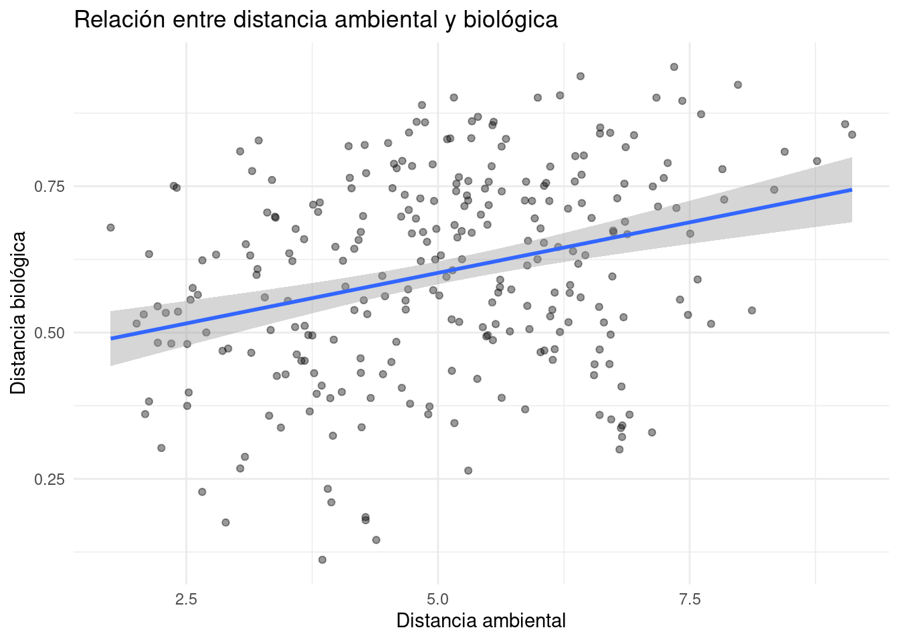
Mantel parcial controla una tercera matriz de distancia.
Pregunta:
¿La distancia ambiental se relaciona con la distancia biológica incluso después de controlar la distancia geográfica?Hipótesis:
H0: no hay correlación entre distancia biológica y ambiental luego de controlar la tercera matriz.
H1: sí hay correlación parcial.En este ejemplo, las coordenadas son simuladas. Entonces sirve para aprender el procedimiento, no para sacar una conclusión ecológica real sobre espacio.
set.seed(123)
coordenadas <- data.frame(
x = runif(nrow(varespec), 0, 100),
y = runif(nrow(varespec), 0, 100)
)
dist_geo <- dist(coordenadas, method = "euclidean")
mantel_parcial <- mantel.partial(
dist_bio,
dist_amb,
dist_geo,
method = "pearson",
permutations = 999
)
mantel_parcial
Partial Mantel statistic based on Pearson's product-moment correlation
Call:
mantel.partial(xdis = dist_bio, ydis = dist_amb, zdis = dist_geo, method = "pearson", permutations = 999)
Mantel statistic r: 0.3098
Significance: 0.001
Upper quantiles of permutations (null model):
90% 95% 97.5% 99%
0.111 0.143 0.164 0.196
Permutation: free
Number of permutations: 999Si Mantel estándar es significativo pero Mantel parcial no, la relación ambiente-comunidad podría estar explicada por estructura espacial. Si ambos son significativos, la relación se mantiene aun controlando la tercera matriz.
Otra aplicación de Mantel es comparar la matriz de distancia original con las distancias cofenéticas de un dendrograma.
La distancia cofenética entre dos objetos es la altura del árbol en la que se unen por primera vez.
Pregunta:
¿Qué dendrograma conserva mejor las distancias originales?Hipótesis de Mantel en cada comparación:
H0: no hay correlación entre las distancias originales y las cofenéticas.
H1: sí hay correlación entre ambas matrices.Para elegir entre dendrogramas, lo más útil es comparar el valor de r: mayor r significa mejor representación de la matriz original.
hclust_ward <- hclust(dist_bio, method = "ward.D2")
hclust_single <- hclust(dist_bio, method = "single")
hclust_average <- hclust(dist_bio, method = "average")
cofenetica_ward <- cophenetic(hclust_ward)
cofenetica_single <- cophenetic(hclust_single)
cofenetica_average <- cophenetic(hclust_average)
mantel_ward <- mantel(dist_bio,
as.dist(cofenetica_ward),
permutations = 999)
mantel_single <- mantel(dist_bio,
as.dist(cofenetica_single),
permutations = 999)
mantel_average <- mantel(dist_bio,
as.dist(cofenetica_average),
permutations = 999)
mantel_ward
Mantel statistic based on Pearson's product-moment correlation
Call:
mantel(xdis = dist_bio, ydis = as.dist(cofenetica_ward), permutations = 999)
Mantel statistic r: 0.7032
Significance: 0.001
Upper quantiles of permutations (null model):
90% 95% 97.5% 99%
0.0708 0.1019 0.1455 0.1836
Permutation: free
Number of permutations: 999mantel_single
Mantel statistic based on Pearson's product-moment correlation
Call:
mantel(xdis = dist_bio, ydis = as.dist(cofenetica_single), permutations = 999)
Mantel statistic r: 0.5306
Significance: 0.001
Upper quantiles of permutations (null model):
90% 95% 97.5% 99%
0.121 0.161 0.199 0.229
Permutation: free
Number of permutations: 999mantel_average
Mantel statistic based on Pearson's product-moment correlation
Call:
mantel(xdis = dist_bio, ydis = as.dist(cofenetica_average), permutations = 999)
Mantel statistic r: 0.7606
Significance: 0.001
Upper quantiles of permutations (null model):
90% 95% 97.5% 99%
0.0722 0.1044 0.1320 0.1747
Permutation: free
Number of permutations: 999tabla_dendro <- data.frame(
metodo = c("Ward.D2", "Single", "Average"),
r_mantel = c(mantel_ward$statistic,
mantel_single$statistic,
mantel_average$statistic),
p_valor = c(mantel_ward$signif,
mantel_single$signif,
mantel_average$signif)
)
tabla_dendro metodo r_mantel p_valor
1 Ward.D2 0.7032459 0.001
2 Single 0.5306190 0.001
3 Average 0.7606220 0.001En la corrida revisada, average tuvo el mayor r, seguido por Ward.D2, y single fue el más débil. Esto coincide con la advertencia del profe: single linkage suele representar peor la estructura global porque puede generar efecto cadena.
La unidad se puede resumir así:
MANOVA:
compara vectores de medias entre grupos.
ANOSIM:
compara distancias dentro vs entre grupos.
PERMDISP:
revisa si los grupos tienen dispersiones parecidas.
Mantel:
compara dos matrices de distancia.
Mantel parcial:
compara dos matrices controlando una tercera.
Mantel para dendrogramas:
compara distancias originales vs distancias del árbol.La clave para no confundirse es escribir siempre:
1. ¿Cuál es la pregunta?
2. ¿Cuál es H0?
3. ¿Qué estadístico miro?
4. ¿Rechazo o no rechazo H0?
5. ¿Qué conclusión puedo escribir sin exagerar?crabsDataset: crabs del paquete MASS. Tiene 200 cangrejos con 5 medidas morfológicas y dos factores: sp y sex.
betadisper().miteDataset: mite del paquete vegan. Contiene abundancias de ácaros en 70 sitios. mite.xy contiene coordenadas espaciales.
mite.env y correr Mantel parcial: biología ~ ambiente | espacio.ward.D2, single y average.